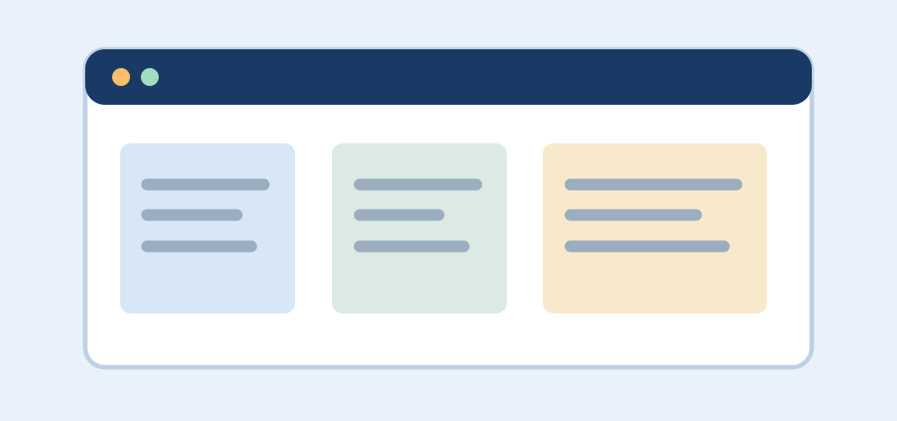

Explore software projects created by ALCHE Mauritius Software
Engineering students across specialisations. Every student team can
share work, approaches, and lessons learned.
Featured Student Project
CampusConnect: A Student Collaboration Portal
By Student Project Team · Published on
·
Full-Stack Web Development

Concept illustration for a student-built project portal.
CampusConnect is a sample project idea for showcasing student
profiles, sharing project updates, and discovering collaborators
across the programme.
“Our goal is to create software that makes it easier for
students to learn from each other.”